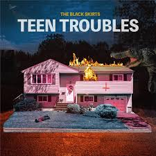
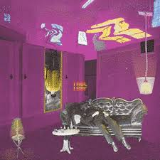

대중의 시선에서 벗어나 있지만, 반드시 들어봐야 할 보석 같은 독립 음악과 명곡 발굴
이번 주 발굴 트랙: #나만_알고_싶은_언더그라운드_음악

발굴 이유: 앨범 'Teen Troubles'에 수록된 곡으로, 타이틀곡들에 비해 상대적으로 덜 알려졌지만 검정치마만의 기괴하면서도 매혹적인 분위기가 극에 달한 곡입니다.

발굴 이유: 겨울 새벽이 떠오르는 차분한 피아노 선율과 세 보컬의 부드러운 화음이 서글픈 이별 감성을 극대화합니다.
이번 주 발굴 트랙: #타이틀곡에_가려진_완벽한_B_Side
발굴 이유: 이름처럼 듣고 있으면 마음이 편안해지고 위로받는 감성적인 곡입니다.
발굴 이유: 대중적인 타이틀곡과는 또 다른 록 밴드 특유의 에너지를 담고 있어, DAY6의 음악적 뿌리를 엿볼 수 있습니다.